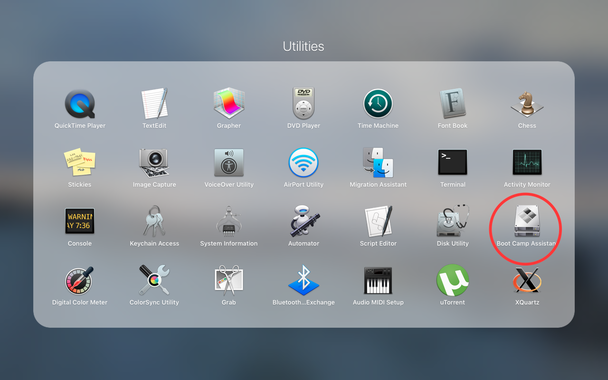
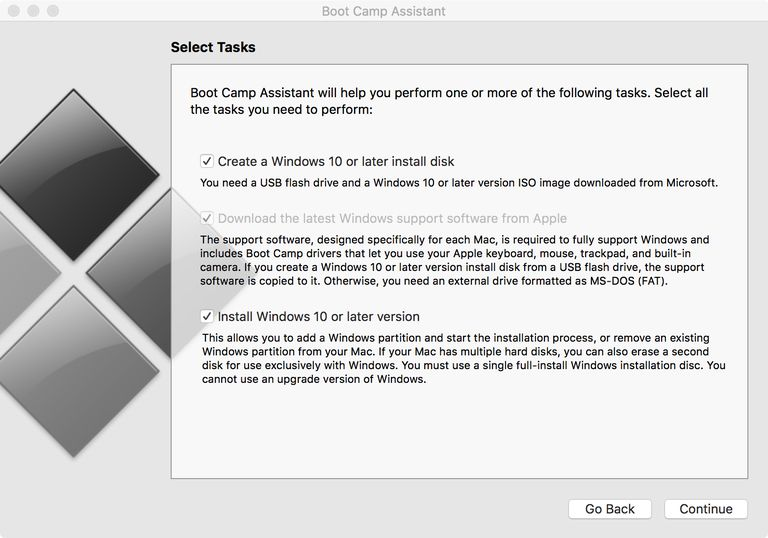

How to dual boot a Mac with Windows (or Linux/Unix)
Have you ever found yourself wishing that there was some way to get the best of both worlds, Microsoft and Apple, without bringing two computers wherever you go? Enter dual boot. A simple keypress and you can boot either into Windows or MacOS. Need to access files from the other operating system? No problem. The other OS is automatically mounted as a disk, so you can transfer files as you would with a USB stick.
Here's how it's done:
Requirements:
- Apple Computer with Mac OS X 10.7 or later
- Usual Peripherals if Mac Pro or Mac mini (keyboard, display, mouse)
- Windows 10/8.1/7 .iso disk image (download for Windows 10 from Microsoft here)
- One 16 GB or larger USB stick or two USB sticks. One of them has to be at least 8 GB
Instructions:
- Make sure your Mac is updated to the latest version of your OS. I am using MacOS Sierra
- Make sure there is a minimum of 50 GB of free space on your hard drive that you can use for Windows. I would suggest having 80 GB if you will be using Windows regularly. Note: the actual space available to you will be much less after formatting and the OS is installed.
- Open up Boot Camp Assistant (in Applications/Utilities)

- Click Continue, and then check all three boxes

- Click Continue, and then click Choose... to choose the .iso file. Make sure the USB stick is plugged in, and choose it as the Destination disk. If the disk is not empty, note that all the files on the disk will be erased.
- Next, click continue and wait as the .iso file is written to the disk
- After that's done,